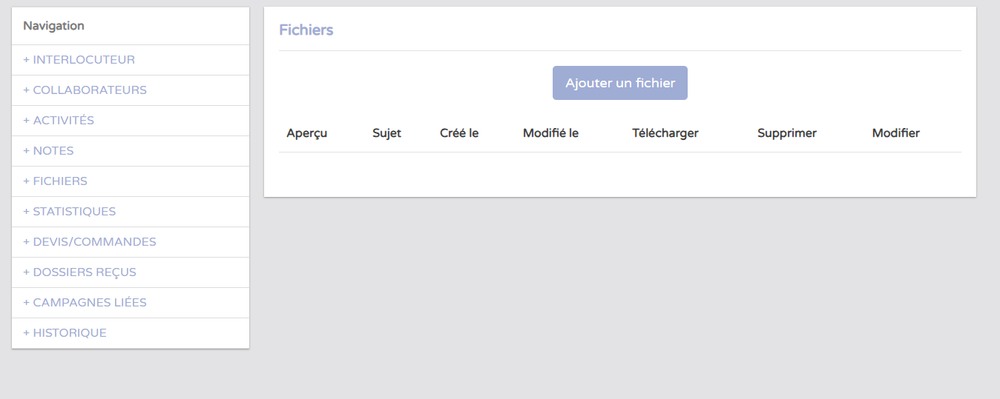
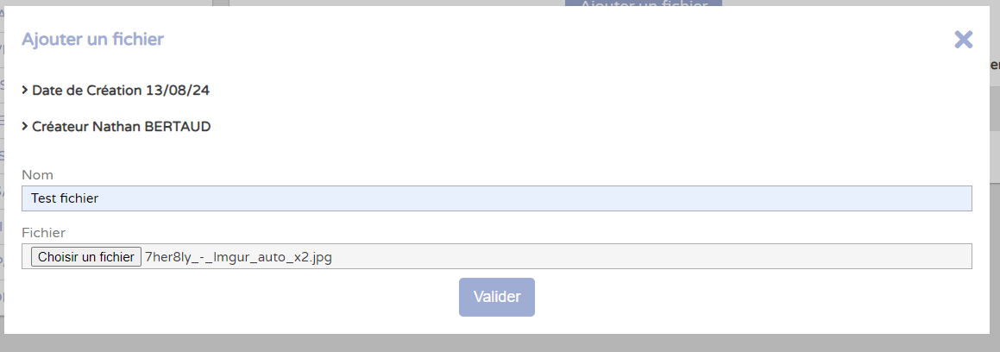
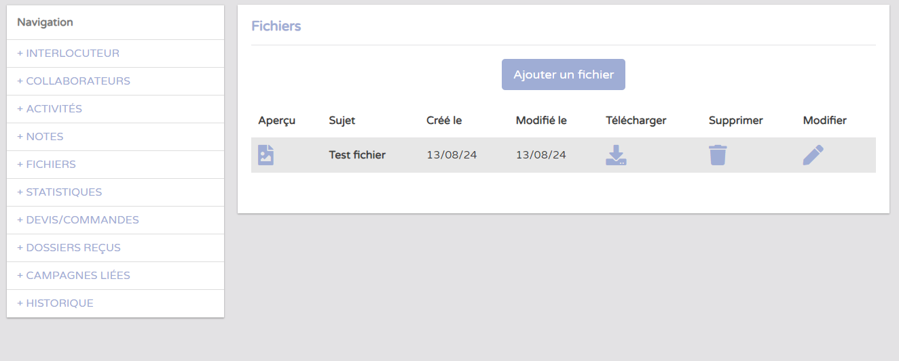
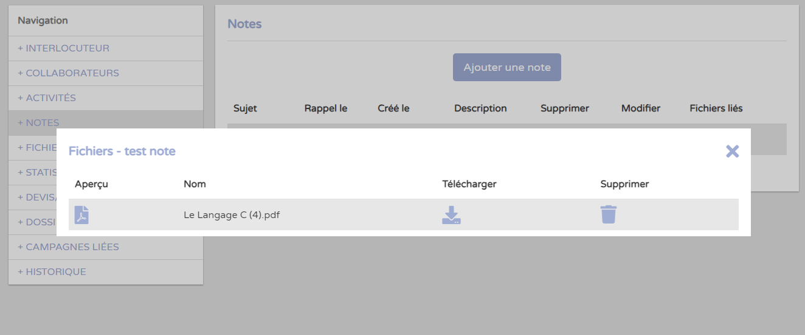

La base interlocuteur correspond à une base de personnes, avec des informations comme le nom, prénom, raison sociale, email, adresse, …
Cette base intervient quand on doit ajouter des interlocuteurs dans un dossier, ou une mission, comme un notaire, un client, un prescripteur ,...
Il existe plusieurs autres choses dans cette base. On peut également attacher des notes à chaque interlocuteur, lui attribuer une activité, …
Le projet est d'ajouter un système de fichiers aux interlocuteurs, depuis un nouvel onglet mais aussi pouvoir attacher un ou plusieurs fichiers à une note.
Pour cela, je vais utiliser le système qui existe déjà pour stocker et récupérer des fichiers dans la base. Il existe une table qui vient référencer tous les fichiers du serveur de stockage, et différentes tables pour chaque type de fichiers (fichiers pour les commandes, pour les devis,...). Je crée donc une table identique mais pour les fichiers interlocuteurs, de sorte à ce que les méthodes du modèle Fichier puissent fonctionner. Je crée également les méthodes dans le controller, pour gérer la récupération des informations lors de la soumission de formulaires, pour filtrer les fichiers possible, par exemple éviter les .exe. J'ajoute une fonction de téléchargement du fichier. Il reste à créer les vues, en s'inspirant de choses qui existent déjà.
 Dans les notes, les fichiers ajoutés apparaissent comme tel :
